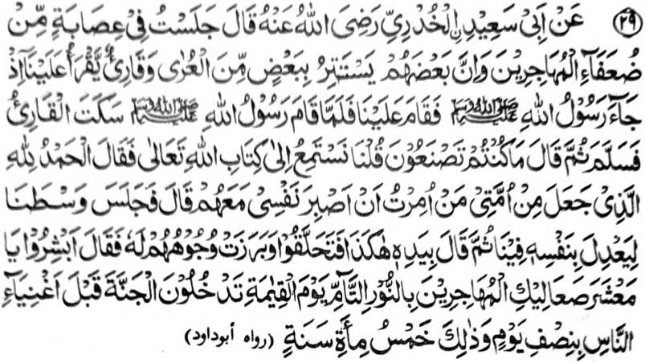
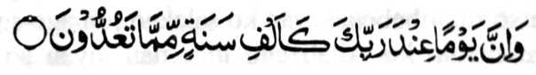
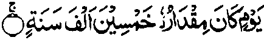

Hadith - 29

Miyakathitayan ko Abu Sa-id Al-Khudrie (Radhiallaho Anho) a pitharo iyan, “Mo-ontod ako ko obay o manga lolobay ko manga Muhajireen a mata-an a so saba-ad kiran na kasasawa-an so saba-ad ko manga Aurat iran go aden a Qari’ [pababatiya sa Qur’an] a pembatiya-an niyan rekami so Qur’an. Miyakatalingoma so Rasulollah (Sallallaho Alaihi Wasallam) na tominindeg ko zaron-sarongan nami. So kiyapaka-tindeg o Rasulollah (Sallallaho Alaihi Wasallam) na tomiyareg so Qari’ na siyalam kami niyan oriyan niyan na pitharo iyan, Antona-ai pezowa-n niyo?’ Pitharo ami a pephamamakinegen nami so Kitab o Allah. Pitharo iyan, Alhamdo Lillah! Sekaniyan-i miyaden a ped ko manga Ummat aken so manga tao a inisogo raken a kaphantang aken ko ginawa ko a ped kiran. ’ Oriyan niyan na miyontod ko zaron-sarongan nami. Kiyapay kami niyan sa mobay kami na langon kami ron somiyangor. Pitharo iyan, ‘Pakapipiya-a niyo a ginawa niyo Hay manga miskin a manga Muhajireen ko kambegi rekano sa tarotop a sindao ko Gawi-i a Qiyamat! Go phakasoled kano ko Sorga ko ona-an o manga ala rekano-i tamok so sapotol sa alongan go giyanan na [aya kalendo niyan na] lima gatos ragon."'
So manga Muhajireen ko kasasawa-i ko saba-ad ko manga Aurat iran na aya mitotoro Oto na so saba-ad ko manga lawas iran na kena ba paliyogat so kasapengi ron ka da-a sapeng iyan. Ogaid sa si-i ko ka-ilay o madakel a tao na ipekhaya pen so kasawa-i sangkoto a saba-ad ko lawas makimpen kena ba haram so ka-ilaya on. Giya-i sabap a domadalong so saba-ad ko saba-ad.
Da iran ma-inengka so kiyapakatalingoma o Rasulollah (Sallallaho ‘Alaihi Wasallain) sabap sa katetembang iran. Miya-ilay ran sekaniyan ko tanto niyan a kiyapaka-obay, na sabap ko adat iran non, na tomiyareg matiya so Qari’.
Makimpen miya-ilay o Rasulollah (Sallallaho ‘Alaihi Wasallam) so isa kiran a pembatiya-an niyan kiran so Qur’an, na ini-iza iyan pen o antona-ai gi-i ran nggola-olaan. Giyangka-iya paka-iza na aya mitotoro iyan na so babaya iyan ko miya-ilay niyan a gi-i ran nggola-ola-an.
So salongan sa Akhirat na aya timbang iyan na sanggibo ragon sangka-iya donya, na miya-aloy sa Qur’an:

Go Mata-an a so salongan si-i ko Kadenan ka na lagid o sanggibo ragon ko itongan niyo. [Surah Al-Hajj:47]
Giya-i sabap a so katharo a Arab a ‘Ghadan’ (Mapita) na aya kalalayami ron a mitotoro iyan na so Gawi-i a Kaphangokom. Apiya giya-i na arangana-i a kalendo o salongan ko kalilid a miyaratiyaya. So peman so da paratiyaya, na pitharo o Qur’an,

“...Si-i ko Alongan a miyabaloy so diyangka iyan na limapolo nggibo ragon [Surah Al-Ma-arij:4]
Si-i peman ko titho a miyaratiyaya na giyangka-iya a gawi-i na mababa si-i ko takes o daradat o paratiyaya niyan. Miyapanothol a si-i ko saba-ad a titho a miyaratiyaya, na aya diyangka iyan na lagid o dowa rak’at a Sambayang ko waqto a Sobo.
So kalbihan o kapembatiya-a ko Qur’an, na miya-aloy ko madakel a Hadith. Sakamaoto mambo, a so kalbihan o kapamakinega ko Qur’an na madakel mambo a kiya-aloya non a Hadith. So kapephamakinega ko kapembatiya-a ko Qur’an na tanto a mala-i kipantag sa so Rasulollah (Sallallaho ‘Alaihi Wasallam) na inisogo-on a kaped iyan kiran a pembatiya sa Qur’an, sa lagid o kiya-aloy niyan sangka-iya Hadith. Saba-ad ko manga poporo a manga Olama na aya kepit iran non na so kapephamamakinega ko kapembatiya-a ko Qur’an na mala-i kalbihan a di so kapembatiya-a on. sabap sa so kabatiya sa Qur’an na Nafl na so kapamamakineganna Paralo na so paralo na mala-i kalbihan a di so Sunnat.
\
Po-on sangka-iya Hadith na aden pen a isa a zaboten non, pantag ko kiyazopa-sopakan sa pamikiran o manga Olama. Aya da pagayoni na anda-i taralebi ko miskin a pati-is a piyagema iyan so mambebetad iyan ko salakao ron ago so mala-i tamok a mananalamat ko Allah ago initoman niyan so manga atas-tanggongan niyan. Giyangka-iya a Hadith na migay sekaniyan sa isa a sabap a kapakalelebi o manga miskin a pati-is.